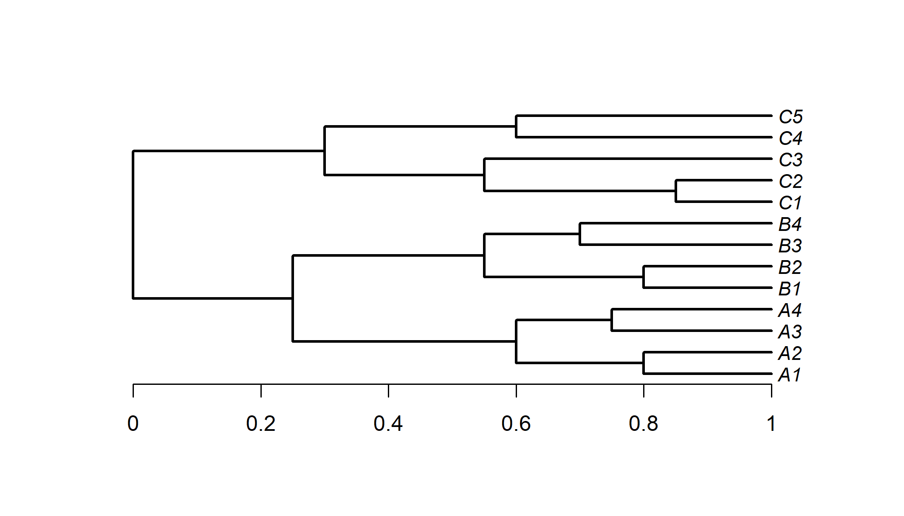
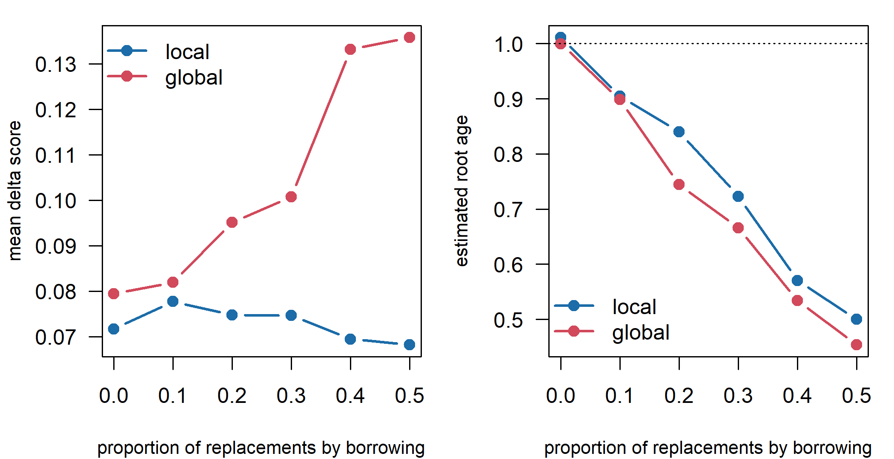
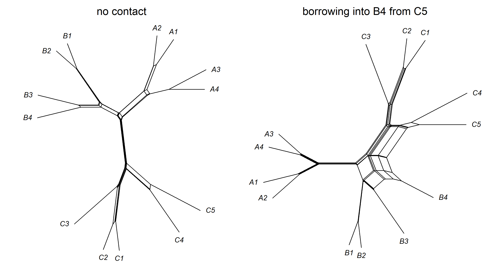
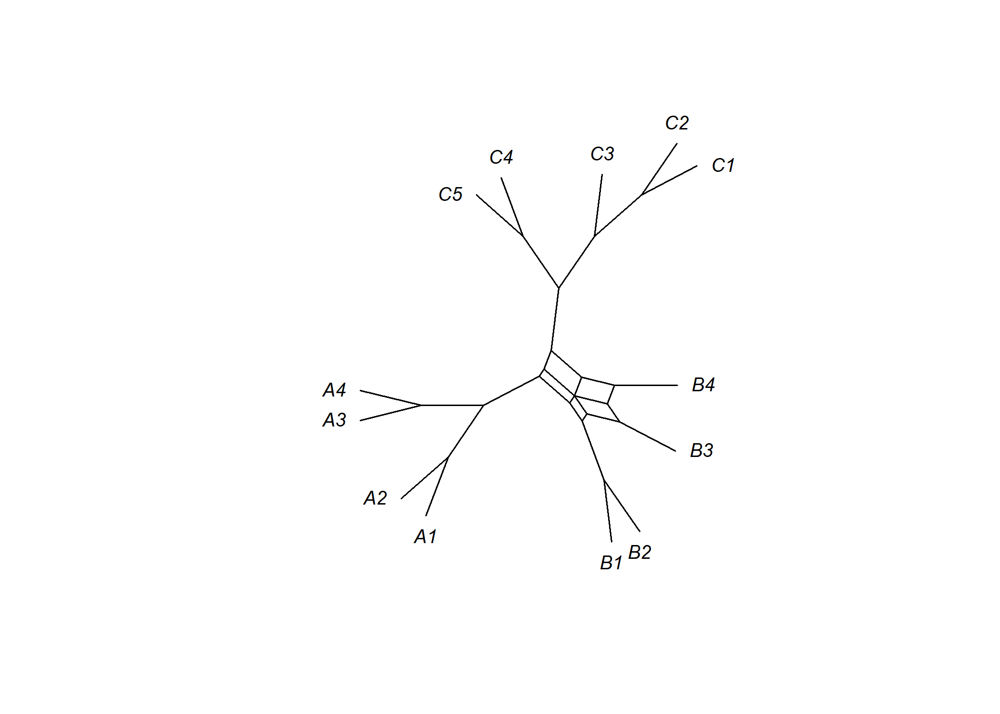
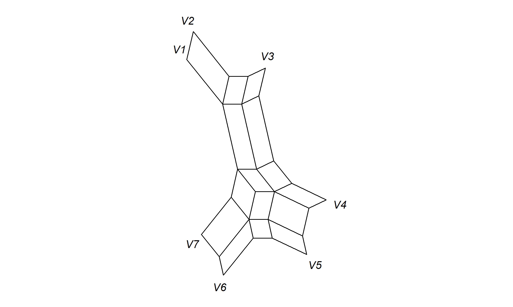

Chapter 8 Borrowing, Contact and Reticulation
Languages do not evolve in isolation. Speakers of neighboring languages trade, intermarry, conquer one another and shift from one language to another, and words, sounds and grammatical patterns pass between languages in the process. Contact is the feature of language history that most clearly distinguishes it from the textbook picture of biological descent, and it was the basis of the oldest objection to the family tree, Johannes Schmidt’s wave theory of 1872. This chapter asks what contact does to phylogenetic inference, how much of it a tree can absorb, and what to use when a tree is the wrong representation. Its central distinction is between descriptive networks, which summarize conflicting signal in the data, and generative models, which propose a history of descent and contact that could have produced the data; and its central argument is that the choice among trees, networks and wave-like representations should follow from the historical question being asked.
After reading this chapter you should be able to:
- distinguish a tree read as an approximation to a genealogy from a tree read as a statistical summary of variation, and explain why under extensive reticulation there may be no bifurcating history to approximate;
- match a historical question (reconstructing divergence, describing similarity, identifying innovations, estimating a dominant pattern of transmission) to an appropriate representation and method (Table 8.1);
- predict how local and distant borrowing affect topologies, branch lengths and dates under reversible and Dollo-type models;
- compute and interpret delta scores and Q-residuals, and explain why they measure conflict rather than borrowing;
- read a NeighborNet or consensus network correctly as a description of conflicting signal, not a history of contact;
- explain what explicit, generative models of contact (lateral-transfer stochastic Dollo, explicit networks) add, and what they cost;
- state when a wave or linkage model, rather than a tree, is the appropriate description, and what Historical Glottometry measures.
8.1 Borrowing and the tree model
8.1.1 What is borrowed, and how often
Contact linguistics distinguishes several outcomes of language contact (Thomason and Kaufman 1988; Thomason 2001). In borrowing, speakers of a language adopt material from another language while keeping their own; vocabulary is borrowed first and most easily, and structural features follow only under intense and prolonged contact. In shift, a community abandons its language for another and often leaves traces of the old language, a substrate, in the new one. In extreme cases contact produces mixed languages, whose grammar and lexicon come from different sources, and creoles, which emerge from pidgins in situations of radical social disruption. Each of these processes creates a different kind of departure from treelike descent.
For phylogenetics based on basic vocabulary, the central question is how much of that vocabulary is borrowed. The World Loanword Database project compiled loanword data for a standardized list of meanings in 41 languages (Haspelmath and Tadmor 2009a). Across the whole list, roughly a quarter of the words were loans on average, with enormous variation among languages (Tadmor 2009). Borrowability also varied strongly by meaning, and Tadmor et al. (2010) used these differences to build the Leipzig-Jakarta list of the 100 meanings least likely to be borrowed. Basic vocabulary is therefore resistant to borrowing but not immune. English took they, sky, skin and egg from Old Norse; the numerals of Thai and of many other languages of mainland Southeast Asia are of Chinese origin; and Japanese, Korean and Vietnamese each have a full set of Chinese-derived numerals alongside native ones. Borrowing rates in basic vocabulary vary among regions and social settings, but the rates measured in large samples are generally modest. Bowern et al. (2011) found, for example, that borrowing rates in the basic vocabulary of hunter-gatherer languages from several regions of the world were generally low, contrary to the expectation that hunter-gatherer languages borrow unusually freely.
8.1.3 The biological parallel and the ethnogenesis critique
Biologists face the same problem in other guises. In prokaryotes, horizontal (lateral) gene transfer is so pervasive that some have argued the tree of life is better described as a web (Doolittle 1999). In plants and animals, hybridization creates lineages with two parents, and introgression, the movement of genes from one species into another by repeated backcrossing, is the closest biological analogue of lexical borrowing. Within species, recombination means that different parts of the genome have different genealogies. Biologists have responded with explicit models of all three processes, which we survey in Section 8.11.
In anthropology, the parallel argument was made forcefully by Moore (1994), who contrasted phylogenesis, the branching of cultures from common ancestors, with ethnogenesis, their formation by blending, and argued that human history was dominated by the latter. The empirical response has been to measure rather than assume. Collard et al. (2006) compared the fit of cultural and biological datasets to trees using the retention index, and found that cultural data were, on average, no less treelike than biological data. That comparison does not settle any particular case, but it reframes the question: how treelike is a given dataset, and how robust are the conclusions we want to draw from it?
8.2 Trees, networks and historical questions
8.2.1 Two readings of a tree
A tree inferred from linguistic data can be read in two quite different ways, and much confusion about contact comes from sliding between them.
On the genealogical reading, the tree is an approximation to a real history in which speech communities separated and then diverged. Internal nodes stand for proto-languages spoken by identifiable (if unknown) communities, branch lengths correspond to elapsed time or amounts of change, and borrowing is a perturbation: a set of lateral events superimposed on a history that is fundamentally branching. Every dating analysis, every reconstruction of a proto-lexicon at an internal node and every homeland inference presupposes this reading. Whether it holds is a matter of empirical adequacy and historical interpretation, in the vocabulary of Section 6.10, not something the inference itself can establish: a posterior probability for a clade is a probability given that the history was a tree.
On the summary reading, the tree is a statistical summary of variation: the hierarchical arrangement that best fits the similarities in the data, in the way that a cluster dendrogram summarizes a distance matrix. Its internal nodes need not correspond to communities, and its branch lengths need not measure time. Support values measure how consistently the data favor a grouping, not whether the grouping ever existed as a speech community. The summary reading is always available, which is part of its appeal, but it licenses far fewer historical conclusions.
The two readings coincide when the history really was close to a tree, and diverge sharply when it was not. Under extensive reticulation, as in Ross’s linkages (Section 8.7) or a dialect continuum in which innovations spread across overlapping sets of varieties, there may be no single bifurcating history underlying the data at all. A tree inferred from such data is then not a slightly blurred picture of the true history, with a few borrowings hidden; it is a projection of a different kind of history onto a model that cannot represent it. Its internal nodes do not correspond to proto-languages, its “divergence times” do not date separations, and high support for a clade may reflect nothing more than the fact that some grouping had to be chosen. It is sometimes reasonable to call a tree inferred from overlapping innovations a summary that hides their distribution; it is not reasonable to then treat its nodes as ancestors. Between the two extremes lies the common case of a dominant vertical signal with contact superimposed, for which a tree with lateral edges, or a network with estimated inheritance proportions, is the natural representation.
8.2.2 Descriptive networks and generative models
Two kinds of network are discussed in this chapter, and they answer different questions. Descriptive networks, such as split networks, NeighborNets and consensus networks (Section 8.5), are functions of the data: they display the signal in a distance matrix or a set of trees, conflicting signal included. They have no likelihood, make no claim about what happened, and their edges have neither direction nor date. They are to a dataset what a scatterplot is to a regression: indispensable for seeing the data, silent about mechanism. Generative models of contact (Section 8.6) specify a history of descent and contact, with parameters such as borrowing rates, donor and recipient lineages, times and inheritance proportions, together with a probability model under which that history could have produced the data. Because they define a probability of the data, they can be fitted, compared, checked against data simulated from them and used to estimate how much borrowing occurred and when. Their cost is the cost of any model: they can be misspecified, they may be computationally demanding, and their parameters may be only weakly identifiable. Some methods fall between the two: perfect phylogenetic networks and minimal lateral networks posit explicit contact edges, but select them by combinatorial or heuristic criteria rather than by a probability model.
8.2.3 Choosing by the historical question
Which representation to use should follow from the historical question being asked, not from a general preference for trees or for waves. Table 8.1 sets out four common questions.
| Historical question | What is estimated | Appropriate representation | Typical tools | What it cannot deliver |
|---|---|---|---|---|
| Reconstructing divergence: in what order, and when, did speech communities separate? | a genealogy of communities, with dates | rooted tree; explicit network if lineages merged | Bayesian trees with clocks (Chapters 9, 10); lateral-transfer models; explicit networks | meaningful answers where no separation into communities took place (linkages, continua) |
| Describing similarity: how similar are the languages, and where does the signal conflict? | a summary of the data | distance matrix, split network, consensus network, dialectometric map | NeighborNet, delta scores and Q-residuals, multidimensional scaling | the direction, timing or cause of contact |
| Identifying innovations: which changes are shared, and by which groups? | the distribution of innovations established by the comparative method | compatibility analysis, perfect phylogenetic network, glottometric diagram | comparative method; perfect phylogenetic networks; Historical Glottometry | rates, dates, or the probability of parallel change, unless modeled |
| Estimating a dominant pattern of transmission: how much is vertical, how much horizontal, and along which tree? | a tree plus the amount and location of transfer | tree with lateral transfer; network with inheritance proportions | lateral-transfer stochastic Dollo; minimal lateral networks; four-taxon tests; network coalescent | a complete history of individual borrowing events |
The questions are not exclusive. A typical project begins by describing similarity, to see how treelike the data are; uses the result to decide whether reconstructing divergence is a sensible goal at all; and, if it is, estimates the dominant tree while checking whether the amount of transfer is large enough to change the conclusions. What the table rules out is the use of a method built for one question to answer another: dating the nodes of a NeighborNet, for instance, or reading a box in a split network as a borrowing event.
8.3 How borrowing distorts trees
8.3.1 Two kinds of borrowing
It helps to distinguish two situations. When languages borrow from their close relatives and immediate neighbors (local borrowing), the borrowed words reinforce relationships that the tree already shows. They do not create much conflict in the data, but they make related languages look more similar than inheritance alone would, compressing the tree: internal branches become shorter and the whole tree shallower. When languages borrow from distant relatives or unrelated languages (distant or global borrowing), the borrowed words create characters that unite languages from different clades. Such characters conflict with the tree and, if there are enough of them, can pull the recipient toward the donor, distorting the topology.
The effect on dates depends on the substitution model. Under reversible models and distance methods, both kinds of borrowing reduce the inferred amount of change, so dates tend to be underestimated. Under the stochastic Dollo model (Chapter 7), a cognate class present in two distant languages must have been born above their common ancestor, so distant borrowing can push inferred births, and possibly the root, deeper into the past, while forcing many parallel losses. Borrowing therefore has no single direction of bias; its effect depends on who borrows from whom and on the model used (Table 7.2).
Does horizontal transmission invalidate cultural phylogenies? Greenhill et al. (2009) addressed this question by simulation. They generated binary trait data on known trees and allowed traits to be copied between lineages at a range of borrowing rates, contrasting borrowing restricted to nearby lineages with borrowing between any lineages. They then reconstructed trees from the simulated data with Bayesian phylogenetic methods and compared the results with the true trees. In the vocabulary of Section 6.10, this is a study of robustness under misspecification: the inference model ignores the borrowing that the generating process contains. Their key finding was that the reconstructed topologies were fairly robust to the levels of borrowing thought to be realistic for basic vocabulary, with accuracy declining at higher rates; they also found that borrowing tended to make the estimated trees shallower, which matters for dating. A companion study (Currie, Greenhill, and Mace 2010) asked the analogous question for comparative analyses of continuous cultural traits and also found a reasonable degree of robustness to moderate horizontal transmission. These studies do not show that borrowing is harmless, only that its effects can be quantified, and that they are often smaller than critics had assumed. Their conclusions hold for the simulated scenarios, which assume an underlying tree; they say nothing about histories, such as linkages, in which there is no tree to recover.
8.3.2 A simulation in R
We now run a small experiment of the same kind. Our model is a meaning-slot model: each language has one word for each of 200 meanings; along each lineage, a word is replaced by a newly coined word (a new cognate class) at rate \(r_{\text{innov}}\); and it is replaced by the word for the same meaning in another, contemporaneous language at rate \(r_{\text{borrow}}\). For global borrowing the donor is chosen uniformly among contemporaneous lineages; for local borrowing it is chosen with probability proportional to \(e^{-d/s}\), where \(d\) is the patristic distance between donor and recipient at the time of borrowing and \(s\) a scale parameter, so that close relatives are preferred. A third option, pair, restricts borrowing to one donor lineage and one recipient lineage within a time window, mimicking a specific episode of contact. The simulation steps through time in small increments, which is crude but transparent. The simulator sim_borrowing() and two helpers, meaning_dist() (the proportion of meanings for which two languages have non-cognate words) and to_binary() (binary presence/absence coding), are loaded silently below.
The code of sim_borrowing() and its helpers, with an explanation of the time-stepping scheme and of the glottochronological formula used below, is in Section C.2.1.
library(phangorn)
family <- read.tree(text = paste0(
"((((A1:0.2,A2:0.2):0.2,(A3:0.25,A4:0.25):0.15):0.35,",
"((B1:0.2,B2:0.2):0.25,(B3:0.3,B4:0.3):0.15):0.3):0.25,",
"(((C1:0.15,C2:0.15):0.3,C3:0.45):0.25,(C4:0.4,C5:0.4):0.3):0.3);"))
plot(family, edge.width = 2, label.offset = 0.01, cex = 0.9)
axisPhylo(backward = FALSE)
Figure 8.1: The toy language family used in the simulations of this chapter: thirteen languages in three subgroups (A, B, C), with root age 1.
We simulate datasets at six levels of borrowing, expressed as the proportion \(b\) of all replacement events that are borrowings, holding the total replacement rate fixed at 0.6 per meaning per unit time. For each dataset we infer a neighbor-joining tree from the proportion of non-cognate meanings, compute its normalized Robinson-Foulds distance to the true tree (Chapter 2), compute the mean delta score with the function quartet_stats() introduced in the next section, and estimate the root age in the manner of glottochronology: we transform distances with the formula \(\hat{t} = -\log(1 - d)/(2r)\) appropriate to the model without borrowing, and take the root height of a UPGMA tree built from them (Chapter 4). In the vocabulary of Section 6.10, this is a test of robustness under misspecification: both the tree-building method and the dating formula assume that there is no borrowing.
set.seed(42)
r_total <- 0.6
grid <- expand.grid(b = seq(0, 0.5, by = 0.1), mode = c("local", "global"),
rep = 1:6, stringsAsFactors = FALSE)
res <- t(sapply(seq_len(nrow(grid)), function(i) {
g <- grid[i, ]
M <- sim_borrowing(family, innov = (1 - g$b) * r_total,
borrow = g$b * r_total, mode = g$mode)
d <- meaning_dist(M)
qs <- quartet_stats(d)
t_hat <- -log(pmax(1 - d, 1e-3)) / r_total # = 2 x estimated divergence time
c(RF = RF.dist(NJ(d), family, normalize = TRUE), delta = qs$delta,
Qres = qs$qres, root_age = max(node.depth.edgelength(upgma(t_hat))))
}))
sim <- cbind(grid, res)
summ <- aggregate(cbind(RF, delta, Qres, root_age) ~ b + mode, data = sim,
FUN = mean)
knitr::kable(summ, digits = c(1, 0, 3, 3, 4, 3), caption = "Mean results over six replicate simulations per setting: normalized Robinson-Foulds distance of the neighbor-joining tree to the true tree, mean delta score, mean Q-residual, and glottochronological estimate of the root age (true value 1), as a function of the proportion b of replacements due to borrowing.")| b | mode | RF | delta | Qres | root_age |
|---|---|---|---|---|---|
| 0.0 | global | 0.000 | 0.079 | 0.0017 | 1.000 |
| 0.1 | global | 0.000 | 0.082 | 0.0017 | 0.898 |
| 0.2 | global | 0.000 | 0.095 | 0.0021 | 0.744 |
| 0.3 | global | 0.000 | 0.101 | 0.0027 | 0.666 |
| 0.4 | global | 0.000 | 0.133 | 0.0035 | 0.534 |
| 0.5 | global | 0.017 | 0.136 | 0.0040 | 0.454 |
| 0.0 | local | 0.000 | 0.072 | 0.0015 | 1.011 |
| 0.1 | local | 0.000 | 0.078 | 0.0016 | 0.905 |
| 0.2 | local | 0.000 | 0.075 | 0.0017 | 0.840 |
| 0.3 | local | 0.000 | 0.075 | 0.0019 | 0.723 |
| 0.4 | local | 0.000 | 0.069 | 0.0016 | 0.571 |
| 0.5 | local | 0.000 | 0.068 | 0.0016 | 0.500 |
par(mfrow = c(1, 2), mar = c(4, 4, 1, 1))
cols <- c(local = "#1b6ca8", global = "#d1495b")
for (v in c("delta", "root_age")) {
plot(NA, xlim = c(0, 0.5), ylim = range(c(summ[[v]], if (v == "root_age") 1)),
xlab = "proportion of replacements by borrowing", las = 1,
cex.lab = 0.85,
ylab = if (v == "delta") "mean delta score" else "estimated root age")
for (m in names(cols)) {
s <- summ[summ$mode == m, ]
lines(s$b, s[[v]], type = "b", pch = 19, col = cols[m], lwd = 2)
}
if (v == "root_age") abline(h = 1, lty = 3)
legend(if (v == "root_age") "bottomleft" else "topleft", names(cols),
col = cols, lwd = 2, pch = 19, bty = "n")
}
Figure 8.2: Effects of borrowing in the simulation. Left: mean delta score. Right: estimated root age (true value 1, dotted line). Global borrowing increases conflict in the data (higher delta scores), whereas local borrowing hardly changes the delta score; both kinds compress the tree and lead to substantial underestimation of the root age. The topology (not shown) was recovered almost perfectly throughout.
The results in Table 8.2 and Figure 8.2 illustrate three general points. First, the topology of this well-structured tree survives even heavy borrowing: the neighbor-joining tree is essentially always correct. That is in line with the robustness of topology reported by Greenhill et al. (2009), although our tree, with long internal branches, is an easy case. Second, global borrowing leaves a detectable signature in the data, a rising delta score, while local borrowing leaves almost none. Local borrowing is the most dangerous kind precisely because it is invisible to treelikeness statistics. Third, both kinds of borrowing make the languages look much more similar than their true divergence times imply, and the root age estimated by the glottochronological formula falls steadily as borrowing increases. In a Bayesian analysis with calibrations, part of this bias would be absorbed by the estimated rate, because the calibrating languages would be affected too, but the compression of the tree is real and unevenly distributed. Note what the experiment does and does not show: the borrowing simulated here is superimposed on a true tree, so the experiment speaks to the genealogical reading of Section 8.2 when it holds; it cannot tell us whether a real family had a tree-like history in the first place.
8.4 Measuring treelikeness
8.4.1 Quartets and the four-point condition
How can we tell from the data whether a tree is an adequate summary? The most widely used statistics work with quartets, sets of four languages. Recall from Chapter 4 that a distance matrix fits a tree exactly if and only if it satisfies the four-point condition: for every quartet \(\{w, x, y, z\}\), of the three sums
\[\begin{equation} s_1 = d_{wx} + d_{yz}, \qquad s_2 = d_{wy} + d_{xz}, \qquad s_3 = d_{wz} + d_{xy}, \tag{8.1} \end{equation}\]
the two largest are equal. If the true tree groups \(w\) with \(x\) and \(y\) with \(z\), then \(s_1\) is the smallest sum and \(s_2 = s_3\), both equal to \(s_1\) plus twice the length of the internal edge. Real distances never satisfy the condition exactly. The question is how far they depart from it, and whether the departures look like noise or like a systematic conflict.
8.4.2 The delta score
Holland et al. (2002) proposed measuring the departure for each quartet by the delta score. Order the sums so that \(s_{(1)} \le s_{(2)} \le s_{(3)}\), and define
\[\begin{equation} \delta_q = \frac{s_{(3)} - s_{(2)}}{s_{(3)} - s_{(1)}}. \tag{8.2} \end{equation}\]
The delta score is zero when the quartet fits a tree exactly (\(s_{(2)} = s_{(3)}\)) and one when the quartet is maximally unresolved, with the two largest sums as far apart as the largest and smallest, which corresponds to a perfect “box” in a split network. Averaging \(\delta_q\) over all quartets gives a score for the whole dataset; averaging over the quartets that contain a given language gives a taxon-specific delta score, which can pick out languages involved in conflicting signal. Because \(\delta_q\) is a ratio, it does not depend on the overall scale of the distances.
8.4.3 The Q-residual
Gray et al. (2010) introduced the Q-residual alongside the delta score in their discussion of treelikeness in language data. It measures the same departure in absolute rather than relative terms, as the squared difference between the two largest sums,
\[\begin{equation} Q_q = \bigl(s_{(3)} - s_{(2)}\bigr)^2, \tag{8.3} \end{equation}\]
computed after the distances have been rescaled so that their mean is one, which makes Q-residuals comparable across datasets. The two statistics behave differently when the internal edge of a quartet is short. A nearly unresolved quartet with a short internal edge can have a large delta score, because the denominator \(s_{(3)} - s_{(1)}\) is small, even though its absolute departure from treelikeness is tiny. The Q-residual is insensitive to this. For this reason, Gray et al. (2010) recommended reporting both. Implementations differ in details, for example in how distances are normalized and whether a constant factor is included, so values should be compared only when computed in the same way. Both statistics are computed by SplitsTree (Huson and Bryant 2006); phangorn’s delta.score() computes delta scores from Hamming distances.
The function quartet_stats(), which computes both statistics for every quartet, and a check of its delta scores against phangorn::delta.score(), are in Section C.2.2.
Delta scores and Q-residuals measure conflict in the data, not borrowing. Conflict can arise from borrowing, but also from parallel innovation, homoplasy due to rapid change, rate heterogeneity among lineages, coding errors, missing data and simple sampling noise in small datasets. Conversely, as the simulation above showed, borrowing among close relatives produces very little conflict. A low delta score does not prove that a family’s history was treelike, and a high score does not prove that it was not.
The next chunk simulates a specific contact episode: during the last 40 percent of the family’s history, language B4 borrows heavily from the lineage leading to C5. We compute taxon-specific delta scores with and without the contact. Because the true history is known, this is a check of what a descriptive statistic responds to; in the vocabulary of Section 6.10 it is neither parameter recovery (no model is fitted) nor a test of empirical adequacy.
set.seed(5)
M_contact <- sim_borrowing(family, innov = 0.5, borrow = 1, mode = "pair",
pair = c("B4", "C5"), window = c(0.6, 1))
set.seed(5)
M_tree <- sim_borrowing(family, innov = 0.5, borrow = 0)
d_contact <- meaning_dist(M_contact); d_tree <- meaning_dist(M_tree)
qs_contact <- quartet_stats(d_contact); qs_tree <- quartet_stats(d_tree)
B_contact <- to_binary(M_contact) # binary coding, used below
pd_contact <- phyDat(B_contact, type = "USER", levels = c(0, 1))
tab <- rbind(no_contact = round(qs_tree$taxon_delta, 3),
contact = round(qs_contact$taxon_delta, 3))
knitr::kable(t(tab), caption = "Taxon-specific delta scores for data simulated on the toy family without contact and with heavy borrowing into B4 from the lineage of C5. The recipient of the loans stands out.")| no_contact | contact | |
|---|---|---|
| A1 | 0.070 | 0.118 |
| A2 | 0.080 | 0.122 |
| A3 | 0.101 | 0.119 |
| A4 | 0.079 | 0.117 |
| B1 | 0.070 | 0.137 |
| B2 | 0.073 | 0.142 |
| B3 | 0.096 | 0.154 |
| B4 | 0.086 | 0.326 |
| C1 | 0.076 | 0.118 |
| C2 | 0.068 | 0.117 |
| C3 | 0.066 | 0.124 |
| C4 | 0.076 | 0.129 |
| C5 | 0.070 | 0.149 |
With contact, the recipient B4 has by far the highest taxon-specific delta score, roughly twice that of any other language. Every other language’s score also rises somewhat, because every language belongs to some quartets that contain B4; the next highest values belong to the donor C5 and to B4’s former close relatives in subgroup B, whose quartets with B4 are the most disturbed. Taxon-specific scores of this kind have been used to flag languages with mixed histories before an analysis, and to decide whether to exclude them. Wichmann et al. (2011) computed delta scores across a large number of language families from ASJP word lists and explored what predicts how reticulate a family appears.
8.4.4 Other measures
Several other statistics carry information about treelikeness. The consistency index and retention index from parsimony (Chapter 4) measure how much homoplasy the data require on the best tree; they were the basis of the comparison by Collard et al. (2006). Bootstrap support and posterior probabilities of clades indicate how consistently the data favor particular splits, although they confound conflict with lack of signal. Counts of characters that are incompatible with the tree, as in the compatibility methods of Ringe, Warnow and Taylor (Section 8.6), are directly interpretable for carefully chosen characters. And posterior predictive checks (Section 7.10) can use any of these quantities as test statistics, comparing their observed values with the values expected under a tree model without borrowing. That last use turns a descriptive statistic into a test of the genealogical reading of Section 8.2: if the observed delta score lies far outside what a fitted tree model generates, the tree is at best a summary.
8.5 Split networks: describing conflict
8.5.1 From trees to split systems
A tree can be described by its splits: each edge, if cut, divides the languages into two groups (Chapter 2). Two splits are compatible if they can appear together on one tree, which is the case when one side of the first split is contained in one side of the second. A tree corresponds to a set of pairwise compatible splits. When data support incompatible splits, for example \(\{B4, C5\}\) versus the rest alongside \(\{B1, B2, B3, B4\}\) versus the rest, no tree can display them all. A split network (or splits graph) displays an arbitrary collection of splits by representing each split not by a single edge but by a band of parallel edges; cutting all the edges of the band separates the two sides of the split. Incompatible splits produce boxes, or more generally parallelograms, and the length of each band represents the weight of the split. A split network is therefore a picture of the signal in the data, conflicting signal included, not of a history: a box between two languages does not say that they were in contact, only that some characters group them together and others do not. In the terms of Section 8.2, split networks are descriptive and answer only the question “how similar are these languages, and where does the signal conflict?”
Not every collection of splits can be drawn in the plane without crossing bands. Circular split systems, in which the languages can be arranged around a circle so that every split cuts the circle into two arcs, can always be drawn as planar networks. Restricting attention to circular systems keeps the networks readable and the computations fast.
8.5.2 Split decomposition and NeighborNet
Two methods build split networks from distances. Split decomposition (Bandelt and Dress 1992) identifies the splits that are supported by every quartet that spans them, which yields a weakly compatible split system. It is conservative, and with large or noisy datasets it tends to give poorly resolved networks. NeighborNet (Bryant and Moulton 2004) is the method of choice for linguistic data. It is an agglomerative method, like neighbor joining (Chapter 4), but instead of joining two nodes into a cluster at each step it builds up a circular ordering of the languages, allowing a node to be paired with two neighbors rather than one. The ordering defines a circular split system, and the weights of the splits are then estimated by non-negative least squares, so that the patristic distances in the network approximate the observed distances as closely as possible. Splits with zero weight are dropped. If the distances fit a tree, NeighborNet returns that tree; the more conflict there is, the more box-like structure appears.
For binary character data there are also median networks (Bandelt et al. 1995), which contain all most parsimonious trees for a set of compatible-in-pairs characters and become very complex when there is much homoplasy, and median-joining networks (Bandelt et al. 1999), which reduce that complexity heuristically. Both were developed for mitochondrial DNA within species. Finally, consensus networks (Holland and Moulton 2003; Holland et al. 2004) summarize a collection of trees, such as bootstrap replicates or a posterior sample, by displaying every split that appears in more than a chosen proportion of the trees. Where a consensus tree must discard conflicting splits, a consensus network shows them, which makes it a natural way to display phylogenetic uncertainty as well as conflict. All of these methods are implemented in SplitsTree (Huson and Bryant 2006), the standard program for split networks, and the main ones are available in phangorn. Huson et al. (2010) give a comprehensive treatment.
8.5.3 NeighborNets of simulated data
The code below draws NeighborNets for the two datasets of the previous section, without contact and with heavy borrowing into B4 from the C5 lineage (Figure 8.3).
par(mfrow = c(1, 2), mar = c(0.5, 0.5, 2, 0.5))
nn_tree <- neighborNet(d_tree)
nn_contact <- neighborNet(d_contact)
plot(nn_tree, cex = 0.8, edge.width = 1)
title("no contact", font.main = 1)
plot(nn_contact, cex = 0.8, edge.width = 1)
title("borrowing into B4 from C5", font.main = 1)
Figure 8.3: NeighborNets of data simulated on the toy family without contact (left) and with heavy borrowing into B4 from the lineage leading to C5 (right). Without contact the network is nearly a tree. With contact, a prominent band of parallel edges represents the split grouping B4 with C5, in conflict with the split grouping B4 with its own subgroup.
The left network is almost a tree: the boxes that appear are small and reflect sampling noise. In the right network, B4 is drawn between subgroup B and C5, and the box that connects them is the visual signature of the conflicting splits. We can quantify the conflict by listing the heaviest splits that are incompatible with the true tree, using a helper function conflicting_splits() (listed in Section C.2.3).
knitr::kable(conflicting_splits(nn_contact, family), row.names = FALSE,
digits = 4,
caption = "The heaviest NeighborNet splits that are absent from the true tree, for the data with contact. Each split is labeled by its smaller side.")| split | weight |
|---|---|
| B4,C1,C2,C3,C4,C5 | 0.0422 |
| B4,C5 | 0.0258 |
| B4,C4,C5 | 0.0231 |
All of the heaviest splits absent from the true tree group B4 with members of subgroup C: with the whole of subgroup C, with C5 alone, and with C4 and C5. This is what the simulated contact predicts. Many of the words B4 acquired from C5 are old words that C5 shares with the rest of its subgroup, so the contact appears not only as a B4-C5 split but also as a split uniting B4 with all of subgroup C. The example also shows the limits of a descriptive network. The network displays the conflict, but nothing in it identifies B4 rather than C5 as the recipient, dates the contact to the last part of the history, or distinguishes contact from, say, parallel innovation. We know these things only because we simulated them. In real applications the true tree is not known, and the analyst must judge which splits are surprising in light of other evidence.
8.5.4 Consensus networks of bootstrap trees
A consensus network over bootstrap trees, or over a posterior sample of trees, shows how the uncertainty about relationships is structured. If the trees disagree only randomly, the network shows many weak, unrelated splits; if they disagree systematically, a few strong conflicting splits appear (Figure 8.4).
set.seed(9)
bs <- bootstrap.phyDat(pd_contact, FUN = function(x) NJ(dist.hamming(x)),
bs = 200)
cnet <- consensusNet(bs, prob = 0.1)
op <- par(xpd = NA) # let tip labels at top and bottom extend into margins
plot(cnet, cex = 0.8, edge.width = 1)
Figure 8.4: Consensus network of 200 bootstrap neighbor-joining trees for the data with contact, showing every split present in at least 10 percent of the bootstrap trees. Edge lengths are proportional to the frequency of the split. The position of B4 is the main source of conflict.
8.5.5 NeighborNets in linguistics
NeighborNet entered linguistics in the early 2000s and quickly became the standard exploratory tool. Bryant et al. (2005) applied it to Indo-European lexical data and found that, although the major subgroups emerge clearly, the relationships among them are surrounded by conflicting signal. McMahon and McMahon (2005) used NeighborNets throughout their book on quantitative language classification. One of their diagnostics deserves wider use. They divided the 200-item list into a sublist of meanings that are widely reconstructable and rarely replaced and a sublist of meanings that are neither, reasoning that related languages should be more distant on the unstable meanings than on the stable ones. For Quechua and Aymara they found the reverse, and concluded that contact rather than common descent accounts for most of the lexical similarity between the two families (McMahon and McMahon 2005; McMahon et al. 2005). Comparing trees or networks built from fast and slow subsets of meanings is a cheap way of locating suspected loans before borrowing is modeled explicitly, although it assumes that stability rankings transfer across families. Lehtinen et al. (2014) made a related comparison for Uralic, between networks built from basic vocabulary and from more easily borrowed vocabulary: the networks broadly supported a treelike diversification, but showed conflicting signal behind some ambiguous splits and the effect of borrowing between branches, mostly within and between the Finnic and Saami subgroups. Ben Hamed (2005) analyzed Chinese dialects and showed that their relationships are poorly represented by a tree, consistent with a long history of dialect contact and the influence of standard languages; the theme was developed further by Ben Hamed and Wang (2006). Heggarty et al. (2010) discussed how divergence measures and network analyses can help distinguish tree-like splitting from wave-like diffusion in language histories. Bowern (2010) discussed the relevance of trees and networks for Australian languages, where the extent of borrowing has long been debated. Bakker et al. (2011) used NeighborNets of typological features to argue that creoles form a typologically distinct group (Section 8.9). And Gray et al. (2010) used NeighborNets together with delta scores and Q-residuals to discuss the “shape” of language history across several families.
The shape and fabric of human history. Gray et al. (2010) addressed a long-standing question: is the history of languages and cultures fundamentally treelike or fundamentally reticulate? They argued that the question is empirical and that the answer may differ among datasets and families. They proposed using delta scores and their new Q-residual (Section 8.4), together with NeighborNet visualizations, to quantify how treelike a dataset is. Applying these measures to language data, they showed that families vary in their degree of treelikeness, and argued that even fairly reticulate data can contain enough tree signal to support phylogenetic inference, provided the degree of conflict is measured and its consequences assessed. The paper’s lasting contribution is methodological: it shifted the debate from assertions about whether “language evolution is a tree” to measurements of how much conflict particular datasets contain. Those measurements describe the data; deciding whether a tree inferred from moderately reticulate data should be read genealogically or only as a summary (Section 8.2) still requires historical argument.
Split networks are routinely over-interpreted. A box in a NeighborNet does not identify a borrowing event, a donor or a recipient, and it carries no information about timing. Boxes can come from sampling error, rate heterogeneity, coding inconsistencies or incomplete data as well as from contact. NeighborNet also always produces a circular split system, so it cannot represent some patterns of conflict at all, and planar drawing places languages on the circle in ways that can suggest spurious relationships between neighbors in the drawing. Use split networks to explore and display conflict, and use generative models or careful linguistic analysis to explain it.
8.6 Explicit models of borrowing
Split networks describe conflict; explicit models try to explain it by positing a tree of descent plus lateral events. The approaches below differ in how far they are generative in the sense of Section 8.2: perfect phylogenetic networks and minimal lateral networks fall between the two kinds distinguished there, whereas the lateral-transfer stochastic Dollo model and the contact-aware models for structural data define a probability for the data, with the advantages listed there.
8.6.1 Perfect phylogenetic networks
Ringe, Warnow and Taylor approached Indo-European subgrouping through compatibility: a character, such as a shared sound change, a morphological innovation or a cognate class, is compatible with a tree if it can evolve on that tree without homoplasy, that is, with each state forming a connected region. With carefully chosen characters, almost all should be compatible with the true tree (Ringe et al. 2002). The characters that remain incompatible are candidates for borrowing or parallel development. Nakhleh, Ringe, et al. (2005) formalized this idea as a perfect phylogenetic network: a tree plus a small number of contact edges, such that every character is compatible with at least one of the trees displayed by the network. In the Indo-European dataset, a network with only a few contact edges accounted for nearly all characters, and edges involving Germanic were prominent among them. The position of Germanic has long been the most problematic in Indo-European subgrouping. The approach gives explicit, interpretable hypotheses of contact, and because its characters are innovations rather than cognate sets it addresses the question of identifying innovations directly; but it requires characters coded with great care and it does not provide a probability model for weighing alternatives. Warnow et al. (2006) later proposed a stochastic model of language evolution with both homoplasy and borrowing, which could underlie statistical versions of this approach.
8.6.2 Minimal lateral networks
Nelson-Sathi et al. (2011) imported a method from the study of prokaryotic genome evolution (Dagan et al. 2008) to detect hidden borrowing in Indo-European. The approach works as follows. Take a reference tree as given. For each cognate set, consider gain-loss scenarios that allow at most one gain, at most two gains, and so on; under a model allowing more gains, patchily distributed cognates are explained by multiple origins rather than by early origin and many losses. Each model implies a distribution of ancestral vocabulary sizes, the number of cognates reconstructed for each ancestral language. The criterion for choosing among models is that ancestral vocabulary sizes should resemble those of the modern languages: a model that allows too few gains produces implausibly large ancestral vocabularies. Under the selected model, cognate sets that require more than one gain are interpreted as candidates for borrowing, and the inferred multiple origins are connected by lateral links, yielding a minimal lateral network. List, Nelson-Sathi, Martin, et al. (2014) applied the method to Chinese dialect data, and List, Nelson-Sathi, Geisler, et al. (2014) discussed the parallels between lexical borrowing and lateral gene transfer more generally. The main limitations are the dependence on a fixed reference tree, and the fact that the method does not distinguish borrowing from parallel semantic shift or from coding error, all of which create multiple apparent origins.
Networks uncover hidden lexical borrowing. Nelson-Sathi et al. (2011) analyzed the Indo-European Swadesh-list data of Dyen and colleagues, using a reference tree of the major subgroups. Their gain-loss analysis found that models allowing only a single origin per cognate set implied ancestral vocabularies far larger than any modern Indo-European language possesses, so that some cognate sets had to have multiple origins. Interpreting these as borrowings, they built a minimal lateral network linking the branches involved and argued that a non-trivial fraction of the basic vocabulary had been affected by borrowing that had not been flagged by the original coders. The study is a good example of how a method from microbial genomics can be transferred to language with minimal modification. It also illustrates the inferential trade-off: the conclusions rest on the vocabulary-size criterion and on the reference tree, and other researchers have questioned whether all inferred multiple origins are really borrowings.
8.6.3 Lateral transfer in the stochastic Dollo model
The most complete probabilistic treatment of lexical borrowing so far is the extension of the stochastic Dollo model (Chapter 7) by Kelly and Nicholls (2017), row 7 of Table 7.2. In addition to births at rate \(\lambda\) and deaths at rate \(\mu\), each trait present in a lineage can be copied into other lineages that exist at the same time, at a rate governed by a borrowing parameter \(\beta\). A borrowed trait does not displace anything; it simply becomes present in the recipient, where it can subsequently die. The difficulty is computational: borrowing makes the fate of a trait in one lineage depend on its presence in the others alive at the same time, so the pruning recursion of Chapter 7 no longer applies and the cost grows quickly with the number of contemporaneous lineages. Kelly and Nicholls (2017) showed how to compute the likelihood exactly, given the tree, for moderate numbers of languages, and implemented the model in TraitLab. This allows the borrowing rate to be estimated jointly with the tree and the dates, and the question of whether ignoring borrowing biases date estimates to be addressed within a single model rather than by simulation. Like any rate parameter, the borrowing rate is identifiable under the model only jointly with the death rate and the tree, and borrowing among close relatives, which barely alters the patterns of presence (Section 8.3), will be hard to estimate in practice.
Why borrowing breaks the pruning recursion, and the size of the state space the lateral-transfer likelihood must track, are explained in Section C.2.4.
8.6.4 Contact events on a tree: contacTrees
Neureiter et al. (2022) approached the same goal in BEAST 2 with a model they call contacTrees. It infers the phylogenetic tree of a language family together with contact events between its clades, represented as contact edges between lineages that coexist in time, so that the history of an individual cognate class can follow a contact edge instead of the tree. In a simulation study the model recovered the simulated history, including the contact events, and showed that ignoring contact can bias the estimated tree height, rate of change and topology; this is parameter recovery under the model’s own assumptions (Section 6.10). Applied to a subset of well-documented Indo-European languages, it recovered known contact events and identified known loanwords. As with the lateral-transfer Dollo model, borrowing parameters are identifiable only jointly with the tree and the rates, and contact between close relatives will be hard to detect.
8.6.5 Contact-aware models for structural data
Borrowing affects grammar as well as vocabulary, and several models address structural features. Daumé III (2009) proposed a non-parametric Bayesian model that combines a phylogenetic component with latent geographic “areas” in which features diffuse. Cathcart et al. (2018) modeled the evolution of Indo-European grammatical features with terms representing pressure from geographically neighboring languages. And the sBayes model of Ranacher et al. (2021) identifies contact zones as sets of languages that share features beyond what their family membership and global preferences predict, using a mixture of inheritance, contact and universal components. These are generative models in the sense of Section 8.2, and they move toward the joint modeling of descent and diffusion that the biology of introgression has developed (Section 8.11). Hartmann and Jäger (2024) proposed a related device for trees inferred from lexical data: a distance-based Gaussian process with latent phylogenetic distances that identifies potential contact zones and estimates how strongly geographic proximity affects clade support and pairwise distances.
8.7 Waves, linkages and Historical Glottometry
8.7.1 The wave model
The oldest alternative to the family tree is the wave model (Wellentheorie) of Schmidt (1872). Schmidt observed that the Indo-European subgroups share innovations in overlapping patterns: Balto-Slavic shares some features with Indo-Iranian, others with Germanic, and so on, in a way that no single tree can accommodate. He proposed that innovations spread like waves across a dialect continuum, each covering a different, possibly overlapping, area. The wave model was never fully abandoned, and dialectologists have always worked with it, but because it offered no procedure for reconstruction comparable to the tree-based comparative method, it remained largely qualitative.
The Oceanic linguist Malcolm Ross gave the wave picture a sharper typology. He distinguished families, which arise when a speech community splits into separate groups that then innovate independently, from linkages, which arise when a dialect network diversifies in place, so that innovations spread across overlapping subsets of dialects (Ross 1988; Ross 1997). In Ross’s terms, a family is innovation-defined, because each of its subgroups is defined by innovations shared by all and only its members, whereas a linkage is innovation-linked, characterized by intersecting innovations. Many Oceanic groups, in Ross’s analysis, are linkages rather than families. The distinction is fundamental for phylogenetics: a tree model is appropriate for families, and for linkages it is not merely approximate but misspecified, because there is no sequence of splits for it to approximate (Section 8.2).
8.7.2 Historical Glottometry
François (2015) and Kalyan and François (2018) developed Historical Glottometry, a method that takes the wave model seriously as a quantitative framework. Its input is a set of innovations established by the comparative method, such as sound changes, morphological changes and lexical replacements, each with the set of languages that share it. No tree is assumed. Instead, for every subgroup \(G\) (any set of languages that share at least one innovation), the method computes several quantities. Let \(S_i\) be the set of languages sharing innovation \(i\). Then:
- the number of exclusively shared innovations is \(\varepsilon_G = |\{i : S_i = G\}|\);
- innovations support \(G\) if they are shared by all members of \(G\), \(G \subseteq S_i\);
- innovations conflict with \(G\) if they are shared by some members of \(G\) together with languages outside it, that is, \(S_i \cap G \neq \emptyset\), \(S_i \setminus G \neq \emptyset\) and \(G \setminus S_i \neq \emptyset\);
- the cohesiveness of \(G\) is the proportion of relevant innovations that support it,
\[\begin{equation} \kappa_G = \frac{|\{i : G \subseteq S_i\}|}{|\{i : G \subseteq S_i\}| + |\{i : S_i \text{ conflicts with } G\}|}; \tag{8.4} \end{equation}\]
- and the subgroup strength is \(\varsigma_G = \varepsilon_G \, \kappa_G\), which weights the number of exclusive innovations by how consistently the group behaves as a unit.
Innovations shared by a proper subset of \(G\) and by no outsiders are neither supporting nor conflicting: they are compatible with \(G\) as a subgroup containing smaller subgroups. A tree is the special case in which no innovation ever conflicts with any subgroup, so that every cohesiveness equals one. The results are displayed in a glottometric diagram, a map-like picture in which each subgroup is drawn as an isogloss whose thickness is proportional to its strength. The formulas above follow Kalyan and François (2018) in slightly simplified form, and readers who want to apply the method should consult the original for the treatment of details such as innovations that are uncertain or attested in only part of a subgroup. Glottometry is descriptive in the sense of Section 8.2, but it describes something different from a split network: the distribution of innovations identified by the comparative method, not overall similarity.
The code below applies these definitions to a toy chain of seven languages, V1 to V7, in which innovations spread over overlapping stretches of the chain, as in a dialect continuum.
innov <- c(rep(list(c("V1", "V2")), 6), rep(list(c("V2", "V3")), 3),
rep(list(c("V1", "V2", "V3")), 5), rep(list(c("V3", "V4")), 2),
rep(list(c("V4", "V5")), 4), rep(list(c("V4", "V5", "V6")), 3),
rep(list(c("V5", "V6")), 2), rep(list(c("V6", "V7")), 5),
rep(list(c("V5", "V6", "V7")), 2), rep(list(c("V3", "V4", "V5")), 2),
list(c("V1", "V2", "V3", "V4")),
rep(list(c("V4", "V5", "V6", "V7")), 2))
glottometry <- function(innov) {
key <- sapply(innov, function(s) paste(sort(s), collapse = "+"))
groups <- unique(innov[!duplicated(key)])
res <- t(sapply(groups, function(G) {
eps <- sum(sapply(innov, function(S) setequal(S, G)))
sup <- sum(sapply(innov, function(S) all(G %in% S)))
con <- sum(sapply(innov, function(S)
any(S %in% G) && any(!S %in% G) && any(!G %in% S)))
c(exclusive = eps, supporting = sup, conflicting = con,
cohesiveness = sup / (sup + con), strength = eps * sup / (sup + con))
}))
out <- data.frame(subgroup = sapply(groups, paste, collapse = "+"), res)
out[order(-out$strength), ]
}
gm <- glottometry(innov)
knitr::kable(gm, row.names = FALSE, digits = 2,
caption = "Historical Glottometry for a toy dialect chain: exclusively shared, supporting and conflicting innovations, cohesiveness and subgroup strength for each subgroup attested by at least one innovation.")| subgroup | exclusive | supporting | conflicting | cohesiveness | strength |
|---|---|---|---|---|---|
| V1+V2 | 6 | 12 | 3 | 0.80 | 4.80 |
| V6+V7 | 5 | 9 | 5 | 0.64 | 3.21 |
| V1+V2+V3 | 5 | 6 | 4 | 0.60 | 3.00 |
| V4+V5 | 4 | 11 | 7 | 0.61 | 2.44 |
| V2+V3 | 3 | 9 | 10 | 0.47 | 1.42 |
| V5+V6 | 2 | 9 | 11 | 0.45 | 0.90 |
| V4+V5+V6 | 3 | 5 | 12 | 0.29 | 0.88 |
| V5+V6+V7 | 2 | 4 | 9 | 0.31 | 0.62 |
| V4+V5+V6+V7 | 2 | 2 | 5 | 0.29 | 0.57 |
| V3+V4 | 2 | 5 | 17 | 0.23 | 0.45 |
| V3+V4+V5 | 2 | 2 | 18 | 0.10 | 0.20 |
| V1+V2+V3+V4 | 1 | 1 | 11 | 0.08 | 0.08 |
langs <- paste0("V", 1:7)
Xg <- sapply(innov, function(S) as.integer(langs %in% S))
rownames(Xg) <- langs
chain_net <- neighborNet(dist.hamming(phyDat(Xg, type = "USER",
levels = c(0, 1))))
# draw the network without labels, then set each label just outside its tip,
# on the side facing away from the centre of the network
op <- par(mar = c(1.5, 1.5, 1.5, 1.5), xpd = NA)
pn <- plot(chain_net, show.tip.label = FALSE, edge.width = 1)
v <- pn$.plot$vertices[seq_along(chain_net$tip.label), , drop = FALSE]
d <- sweep(v, 2, colMeans(pn$.plot$vertices))
u <- d / sqrt(rowSums(d^2)) # unit vector from the centre towards each tip
off <- 0.6 * strwidth("V0", cex = 0.9, font = 3) # gap between tip and label
for (i in seq_len(nrow(v)))
text(v[i, 1] + off * u[i, 1], v[i, 2] + off * u[i, 2], chain_net$tip.label[i],
cex = 0.9, font = 3, adj = c(0.5 - 0.5 * u[i, 1], 0.5 - 0.5 * u[i, 2]))
Figure 8.5: NeighborNet of the same toy innovations, coded as binary characters (one per innovation). The chain-like structure of overlapping innovations produces a network with conflicting splits throughout, which no single tree can represent.
The strongest subgroups are V1+V2 and V6+V7, which have many exclusive innovations and are rarely cut across. Groups such as V1+V2+V3 are also strong, despite being crossed by innovations linking V3 to V4. Groups like V3+V4, with few exclusive innovations and much conflicting evidence, are weak. The table and network (Figure 8.5) together describe a structure that a tree would force into an arbitrary hierarchy: a tree must either join V3 with V1 and V2 or with V4, discarding the evidence for the other grouping. Whichever it chose, its internal node would be a summary of the data, not a proto-language.
The Torres and Banks languages of Vanuatu. The Torres and Banks Islands of northern Vanuatu are home to seventeen closely related Oceanic languages spoken in a chain of small islands. François (2015) and Kalyan and François (2018) assembled several hundred innovations in phonology, morphology and lexicon from comparative work on these languages, and found that their distributions intersect so extensively that no tree can accommodate more than a fraction of them. Their glottometric analysis showed strong subgroups among geographically adjacent languages and a pattern of overlapping groupings that follows the geography of the islands. They interpreted the result as the signature of a dialect network that diversified in place, with innovations spreading between neighboring communities after the initial settlement: in Ross’s terms, a linkage rather than a family. The case is a reminder that the comparative method itself produces evidence that may not be treelike, and that forcing such evidence into a tree can manufacture subgroups that never existed as speech communities.
8.7.3 Critiques and the place of trees
Historical Glottometry has been criticized from the standpoint of tree-based historical linguistics. Jacques and List (2019) argued that many apparent conflicts among innovations can be explained by parallel innovation (especially of common, natural sound changes) or by later diffusion between languages that had already separated, and that distinguishing these possibilities requires more than counting shared innovations. They argued that tree models remain indispensable for reconstruction, and that the choice between tree and wave models should depend on the data rather than on a general preference. Their paper appeared in a special issue of the Journal of Historical Linguistics on alternatives to the tree model (Kalyan et al. 2019), together with a reply by Kalyan and François (2019), and with a study by Verkerk (2019) that took a model-based route: the multiple-topologies method of BayesPhylogenies, which lets different characters follow different trees, found evidence for more than one topology in lexical data from Sinitic, Indo-European and Japonic, but not in Austronesian, and Verkerk discusses dialect-chain break-up, borrowing, incomplete lineage sorting and properties of lexical datasets as possible sources of this reticulation. Jacques and List (2019) also pointed out that glottometry, as formulated, treats all innovations as equally informative and does not model the probability of parallel change, which a probabilistic phylogenetic model does. Defenders of glottometry reply that the method is intended for exactly the situations in which the tree model fails, notably dialect continua that diversified in place, and that it makes explicit what tree diagrams hide. In the terms of Table 8.1, the two sides are partly answering different questions: glottometry describes the distribution of innovations, while tree-based reconstruction asks about the sequence of separations, and the dispute is over which question a particular body of evidence can answer. A synthesis would combine the two: a generative model with both descent and diffusion, in which the relative contributions of each are estimated from the data. The biological models of Section 8.11 show what such models can look like.
One step toward such a synthesis within the tree framework is the Dialect Chain Tree of Elgh and Hammarström (2024), an extension of the tree model that represents both tree-like descent and the systematic disintegration of dialect chains, and so formalizes the notion of a linkage in a way that quantitative methods can use. Bayesian case studies point the same way. In the Timor-Alor-Pantar family, Kaiping and Klamer (2022) concluded that dialect-cluster effects played a major role in the formation of the present languages; King et al. (2024) found their Philippine results consistent with a linkage shaped by diffusion after a rapid initial spread; and Auderset et al. (2023) showed that Bayesian methods can suggest new subgroups within the Mixtecan dialect continuum while raising questions about how primary data are gathered and organized.
8.8 Dialect continua and dialectometry
Dialect continua are the clearest case in which treelike descent is the wrong model. Neighboring dialects are mutually intelligible, innovations spread across dialect boundaries, and the boundaries themselves are often gradients rather than lines. Dialectology developed its own quantitative tradition, dialectometry, which measures aggregate distances between dialects from large numbers of linguistic features and analyzes them with clustering, multidimensional scaling and network methods. Nerbonne (2009) and Wieling and Nerbonne (2015) review the field, including the use of edit-distance measures of pronunciation difference, statistical tests of the relation between linguistic and geographic distance, and the problem of identifying stable dialect groups when different clustering methods disagree (Prokić and Nerbonne 2008). Dialect data can also be analyzed with the categories of historical linguistics rather than with aggregate distances: Babel et al. (2013) studied the dialectology of Western Numic (Uto-Aztecan) and argued that both descent and diffusion shaped its diversification. Phylogenetic network methods entered dialectology through NeighborNet analyses such as those of Chinese dialects (Ben Hamed 2005; List, Nelson-Sathi, Martin, et al. 2014). A recurrent finding is that linguistic distance increases with geographic distance roughly as one would expect from local diffusion, so that a spatially explicit model of diffusion is often a better null model than a tree.
The phylogenetic relevance of dialectometry is twofold. First, it shows that the “language” level at which most phylogenetic analyses operate is itself an abstraction over a continuum, and that the choice of which varieties to sample affects the shape of the result (Chapter 15). Second, its methods for relating linguistic to geographic distance, and for detecting where gradients become boundaries, have counterparts in landscape genetics and phylogeography (Chapter 11) that have scarcely been brought together.
8.9 Creoles and mixed languages
Creoles and mixed languages strain the tree model in the most extreme way, because they do not have a single parent. Thomason and Kaufman (1988) argued that such languages are “not genetically related” to any of their source languages in the traditional sense, since the comparative method’s assumption of continuous transmission of the whole linguistic system breaks down. Mixed languages make the point vividly. Michif, spoken by Métis communities in Canada and the northern United States, combines French noun phrases with Plains Cree verbs (Bakker 1997); other mixed languages combine the grammar of one language with the lexicon of another in different ways (Matras and Bakker 2003). A tree built from lexical data alone would place Michif with French or with Cree depending on which part of the vocabulary dominated the list, and neither placement would be a meaningful statement about its history.
Creoles raise a related but different question: whether they form a typologically distinct class of languages. Bakker et al. (2011) compared creoles and non-creoles on a set of structural features and used NeighborNet to show that creoles cluster together, apart from both their lexifier languages and other languages, which they took as evidence for a distinct creole typological profile. The interpretation has been contested, partly because the result depends on the choice of features and the sampling of comparison languages. The Atlas of Pidgin and Creole Language Structures (Michaelis et al. 2013) now provides a much larger standardized dataset for questions of this kind. For phylogenetic purposes, the essential point is that such languages require models with multiple parents, such as hybridization networks or admixture graphs, or should be excluded from tree-based analyses with an explicit justification.
8.10 Contact and typological convergence
Contact affects grammar as well as vocabulary, and grammatical convergence among unrelated languages creates linguistic areas (Sprachbünde). The Balkan languages, belonging to several different branches of Indo-European, share features such as a postposed definite article and the loss of the infinitive; the languages of mainland Southeast Asia, from several families, converge on tone, isolating morphology and classifier systems. For phylogenetic inference from structural data, convergence is a confound of the same kind as lexical borrowing. For comparative studies of typology, it is one half of Galton’s problem: languages may share features because they share ancestors or because they are neighbors (Section 13.1.2).
Statistical approaches that separate inheritance from contact in typological data come in several forms. Population-genetic clustering methods such as STRUCTURE have been applied to structural features: Reesink et al. (2009) analyzed the languages of Sahul (New Guinea, Island Melanesia and Australia) and identified components that combine deep inherited signal with areal spread. Dunn et al. (2008) explored the use of structural features to reconstruct deep relationships among Papuan languages of Island Melanesia, where lexical evidence is exhausted, and discussed the danger that contact-induced similarity may mimic deep relationship. The latent-area model of Daumé III (2009), the model of Murawaki and Yamauchi (2018), which estimates for each feature both its vertical stability and its horizontal diffusibility, the areal-pressure model of Cathcart et al. (2018) and the contact-zone mixture model of Ranacher et al. (2021) (Section 8.6) are explicit models for typological data. Chapter 13 discusses spatio-phylogenetic regression models that include both a phylogenetic and a spatial covariance term, which are the most widely used tool for this problem in comparative typology.
Genetics now offers an independent proxy for contact. Graff, Blasi, et al. (2025) used genetic admixture between speaker populations, and location in a shared geohistorical area, as proxies for contact, and found that language pairs with such contact share noticeably more linguistic features, with a similar increase across world regions and demographic situations. The effect varied strongly among features and was only partly explained by their learnability or social function, and for some features admixture decreased sharing, which the authors interpret as a possible signal of divergence under contact (schismogenesis). Results of this kind suggest realistic orders of magnitude for borrowing in simulation studies of structural data.
8.11 Phylogenetic networks from biology
The most striking contrast between linguistics and biology in this area is the sophistication of the explicit network models that biologists now use routinely. Split networks, which dominate linguistic network analysis, are implicit networks: they display conflict but do not posit reticulation events. Explicit phylogenetic networks are rooted, directed graphs in which some nodes (reticulation nodes) have two parents, each representing a hybridization or introgression event with an estimated time and an estimated proportion of inheritance from each parent (Huson et al. 2010). The implicit/explicit distinction of the network literature is the descriptive/generative distinction of Section 8.2, applied to graphs; explicit networks fitted under a probability model are the generative models that linguistics mostly lacks.
Explicit networks under the multispecies network coalescent. In biology, gene trees differ from the species tree through incomplete lineage sorting (ancestral polymorphism sorted differently in different descendant lineages) and hybridization/introgression. The multispecies network coalescent combines both: each locus has its own gene tree, generated by a coalescent process within the branches of a species network that includes reticulation nodes. PhyloNet (Than et al. 2008; Wen et al. 2018) infers such networks by maximum likelihood, maximum pseudo-likelihood or Bayesian MCMC; SNaQ, in the PhyloNetworks package (Solı́s-Lemus and Ané 2016; Solís-Lemus et al. 2017), by pseudo-likelihood from quartet concordance factors; and SpeciesNetwork (Chi Zhang et al. 2018) by full Bayesian inference in BEAST 2. Section 16.4.2 assesses these methods for language data, and Section 16.2.2 sets out the linguistic analogy, close but not exact, in which each meaning’s history is a gene tree, ancestral synonymy plays the part of incomplete lineage sorting and borrowing that of introgression. A reticulation node of inheritance proportion \(\gamma\) would say that a fraction \(\gamma\) of the basic vocabulary of a lineage comes from one parent and \(1 - \gamma\) from the other, which is exactly the kind of statement linguists make about heavily mixed lexicons. Admixture tests and graphs. Besides the D-statistic (ABBA-BABA test) (Green et al. 2010; Durand et al. 2011), Patterson et al. (2012) developed a family of related \(f\)-statistics and admixture graphs, and TreeMix (Pickrell and Pritchard 2012) infers population trees with migration edges from allele frequencies. For cognate data the four-taxon test reads: for languages (((P1, P2), P3), O), an excess of cognates shared by P2 and P3 over those shared by P1 and P3 indicates contact between P2 and P3. Section 16.4.1 derives the corresponding lexical \(D\) statistic (Equation (16.3)), its standard error and the conditions under which it separates borrowing from sorting. Ancestral recombination graphs. Within species, the ancestral recombination graph describes how recombination gives different parts of the genome different genealogies (Griffiths and Marjoram 1997), and modern methods such as ARGweaver infer it from genome sequences (Rasmussen et al. 2014). The ARG is the natural model for dialect continua, in which different features have different genealogies, but no such model has, to our knowledge, been developed for linguistic data. Reconciliation. Gene-tree/species-tree reconciliation with duplication, transfer and loss (DTL) models infers transfers by comparing each gene tree with the species tree; Section 16.4.3 discusses how it could be applied to the histories of individual meanings.
The obstacles to applying these methods to language are partly practical and partly conceptual. Practically, multispecies-coalescent methods need many independent loci, each informative enough to estimate a gene tree or at least concordance factors, whereas a single meaning is a partition into a handful of cognate classes, so the methods would have to work from site patterns or quartet frequencies pooled across meanings (Section 16.2.2). Conceptually, borrowing in language often happens between languages that have been separated for a long time, and continuously, rather than in a few discrete pulses, which strains models built around a small number of reticulation events. And an explicit network still presupposes a mostly genealogical history with occasional merging; for linkages and continua, the ancestral recombination graph or a spatial diffusion model is the better analogy. Neither obstacle seems insurmountable, and the payoff would be large: explicit, testable statements about which languages exchanged how much vocabulary, and when.
8.12 Practical guidance
For an analyst working with lexical data from a family in which contact is known or suspected, the following sequence is a reasonable default.
- State the historical question. Decide whether the goal is to reconstruct divergence, describe similarity, identify innovations or estimate a dominant pattern of transmission (Table 8.1), and say whether the tree is to be read genealogically or as a summary.
- Flag and examine known loans. Code them so that they do not unite donor and recipient, and record the decision. Analyze the data both with and without problematic items.
- Describe the conflict. Compute delta scores and Q-residuals for the whole dataset and for each language, and draw a NeighborNet. Look for languages with exceptionally high taxon-specific scores and for strong conflicting splits.
- Interpret conflict linguistically. Ask whether conflicting splits correspond to known contact situations, dialect continua, coding inconsistencies or simply poorly sampled languages. If the data look like a linkage, reconsider whether a dated tree answers any meaningful question.
- Assess sensitivity. Rerun the phylogenetic analysis without the most reticulate languages and without the meanings most prone to borrowing (for example, using the Leipzig-Jakarta list), and compare topologies and dates.
- Remember the invisible kind. Borrowing among close relatives leaves little trace in treelikeness statistics but can compress trees and bias dates. When it is suspected, consider simulation studies tailored to the family, or explicit lateral-transfer models.
- Use descriptive networks to explore, generative models to explain. Split networks are exploratory displays. Statements about who borrowed from whom, how much and when require generative models or careful comparative analysis.
- A tree can be read as an approximation to a genealogy or as a statistical summary of variation. Dating, ancestral reconstruction and homeland inference require the genealogical reading; under extensive reticulation there may be no bifurcating history for a tree to approximate.
- The choice of representation should follow from the historical question: reconstructing divergence, describing similarity, identifying innovations, or estimating a dominant pattern of transmission (Table 8.1).
- Basic vocabulary is resistant to borrowing but not immune; undetected loans between close relatives are the hardest to find and the hardest for methods to detect.
- Simulation studies suggest that tree topologies are fairly robust to realistic levels of borrowing superimposed on a tree, while branch lengths and dates are more sensitive; borrowing among close relatives compresses trees without creating much conflict.
- Delta scores and Q-residuals measure the departure of quartets from the four-point condition, in relative and absolute terms respectively; they measure conflict, not borrowing as such.
- Split networks (NeighborNet, split decomposition, consensus networks) are descriptive: they display conflicting signal, and their boxes have many possible causes, no direction and no date.
- Generative models of contact (the lateral-transfer stochastic Dollo model, contact-aware models for structural data, explicit networks) define a probability for the data and can estimate how much borrowing occurred, at the price of new assumptions and weakly identified parameters. Perfect phylogenetic networks and minimal lateral networks posit explicit contact edges without a full probability model.
- The wave model, Ross’s linkages and Historical Glottometry describe diversification in a dialect network; dialect continua, creoles and mixed languages require models with multiple parents or spatial diffusion.
- Biology offers explicit network models under the multispecies network coalescent, admixture tests and ancestral recombination graphs, almost none of which have been applied to language.
8.13 Exercises
Conceptual
- Explain the difference between reading a tree as an approximation to a genealogy and reading it as a statistical summary of variation. For each of the following, say which reading it requires: a NeighborNet, a dated MCC tree used to estimate the age of a proto-language, a reconstruction of the proto-lexicon at an internal node, a dendrogram of dialect distances.
- A NeighborNet shows a large box joining language X with a language of a different subgroup. List four possible causes, and for each say what additional evidence would distinguish it from borrowing.
- Why is local borrowing nearly invisible to delta scores and Q-residuals, and yet harmful to date estimates?
- Using Table 8.1, explain why dating the internal nodes of a tree inferred from a linkage is not a meaningful exercise, even if the tree has high posterior support.
- What does a generative model of contact allow that a descriptive network does not? What does it cost?
Computational
- With
sim_borrowing()andquartet_stats(), extend the experiment of Section 8.3 to thelocal_scalevalues 0.05, 0.2 and 1. How does the relation between the borrowing proportion and the mean delta score change as borrowing becomes more strictly local? - Using
sim_borrowing(..., mode = "pair"), simulate contact from C5 into B4 in an early window (window = c(0.2, 0.5)) and a late window (window = c(0.6, 1)) of the same intensity. Compare the taxon-specific delta scores and the NeighborNets (neighborNet()). Which episode is easier to detect, and why? - Implement the four-taxon test described in the biobox of Section 8.11 for cognate data: for the binary coding
B_contactand the quartet (((B3, B4), C5), A1), count the cognate classes present in B4 and C5 but not B3, and those present in B3 and C5 but not B4, and compare the two counts with those obtained fromto_binary(M_tree). How would you assess whether a difference is larger than expected by chance? - Modify the toy innovations
innovof Section 8.7 so that the chain becomes a family with two clean subgroups, rerunglottometry(), and check that every cohesiveness equals one.
Research
- You are asked to estimate the age of a group of about 25 closely related languages spoken along a river valley, where dialectologists report gradual transitions between neighboring varieties. Using Table 8.1, decide which historical question can sensibly be asked of the data, and design an analysis that first tests whether the genealogical reading of a tree is defensible.
- Propose a simulation study that would tell you how well the lateral-transfer stochastic Dollo model distinguishes local borrowing from short branches in a family of 30 languages. Specify the generating scenarios, the quantities to be recorded, and which validation categories of Section 6.10 each scenario addresses.
- A language is suspected to be mixed, with a lexicon drawn from two families. Compare how a tree analysis, a NeighborNet and an explicit network model with an inheritance proportion \(\gamma\) would represent it, and argue which you would report.
8.14 Further reading
- Thomason and Kaufman (1988): The classic treatment of contact-induced change, mixed languages and the limits of genetic classification.
- McMahon and McMahon (2005): Simulations of borrowing on trees, network analyses of Indo-European, Andean and Australian data, and the use of stable versus unstable sublists to diagnose contact.
- Haspelmath and Tadmor (2009a) and Tadmor et al. (2010). The World Loanword Database project and its findings on what is borrowed and how often; the empirical basis for estimating realistic borrowing rates.
- Greenhill et al. (2009): The simulation study of how borrowing affects phylogenetic inference; a model for family-specific simulation studies.
- Gray et al. (2010): The argument for measuring treelikeness, with delta scores, Q-residuals and NeighborNets applied to language data.
- Bryant and Moulton (2004) and Huson and Bryant (2006). The NeighborNet algorithm and the SplitsTree software; Huson et al. (2010) is the comprehensive textbook on phylogenetic networks.
- Nakhleh, Ringe, et al. (2005): Perfect phylogenetic networks for Indo-European; the clearest statement of the compatibility approach to contact.
- Nelson-Sathi et al. (2011): Minimal lateral networks and hidden borrowing in Indo-European; a direct transfer from microbial genomics.
- Kelly and Nicholls (2017): The lateral-transfer stochastic Dollo model; technically demanding, but the most complete probabilistic model of lexical borrowing on a tree.
- Neureiter et al. (2022): contacTrees, a BEAST 2 model that infers contact events jointly with the tree, with a simulation study and an Indo-European case study.
- Elgh and Hammarström (2024): The Dialect Chain Tree, a formal extension of the tree model to linkages.
- François (2015) and Kalyan and François (2018). The wave model, linkages and Historical Glottometry, with the Torres and Banks case study; read together with the critique by Jacques and List (2019).
- Solı́s-Lemus and Ané (2016) and Wen et al. (2018). Entry points to explicit phylogenetic network inference in biology, for readers who want to bring these methods to language.